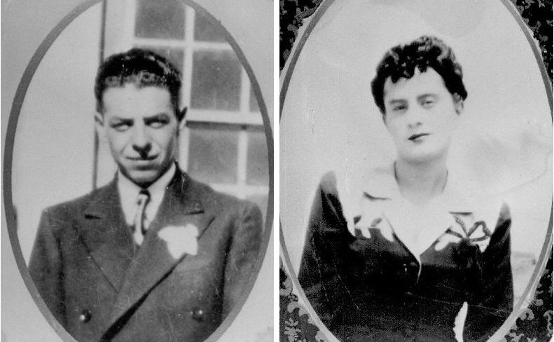

Mar 13, 2026
Hello family! This is Duane Velasquez (AnnaMarie's kid). If you haven't heard, we are trying to organize a reunion in September for Grandpa Henry and Grandma Estella's descendants. It occured to me that we needed a single point of reference that we can all share ideas, keep track of details, and follow progress. I think it's too much for one person to try to collect info and keep everyone in sync. But a common repository seems to be a better solution.
I'm not on the socials anymore, but I can code a simple webpage that ya'll can access. My coding is a little rusty so please be nice. Check here for news and updates. Send questions/comments to me or mom, and I will try to get them on here when I am able.
Ok. Here's what we've got so far:
The Descendants of Henry and Estella Jaquez and their Families Reunion 2026
September 5, 2026 from 9:00 AM to 6:00 PM
Fountain Creek Regional Park
2010 Duckwood Road
Fountain, CO 80817
If you are coming up from south I-25, take Exit 132A. If you are coming down from north I-25, take Exit 132A (Go under the bridge, do not go onto Ft. Carson!).
Go east on Highway 16 for 1/2 mile, then take Security exit to Highway 85 south 1/2 mile to Duckwood Road. Take a right onto Duckwood, then take an immediate left to Pavillion #1 parking area.
There are a few places to stay near the venue including Microtel Inn & Suites, Super 8, and KOA Campground. Further North, off of exit 138 (Circle Dr./Lake Ave.) there are tons of hotels on the west side of the interstate.
We still need to figure out what we are going to eat. So far the suggestions are:
Bar-B-QueThere was a suggestion that everyone wear a specific color to identify and distinguish their lineage. These are the colors agreed upon: